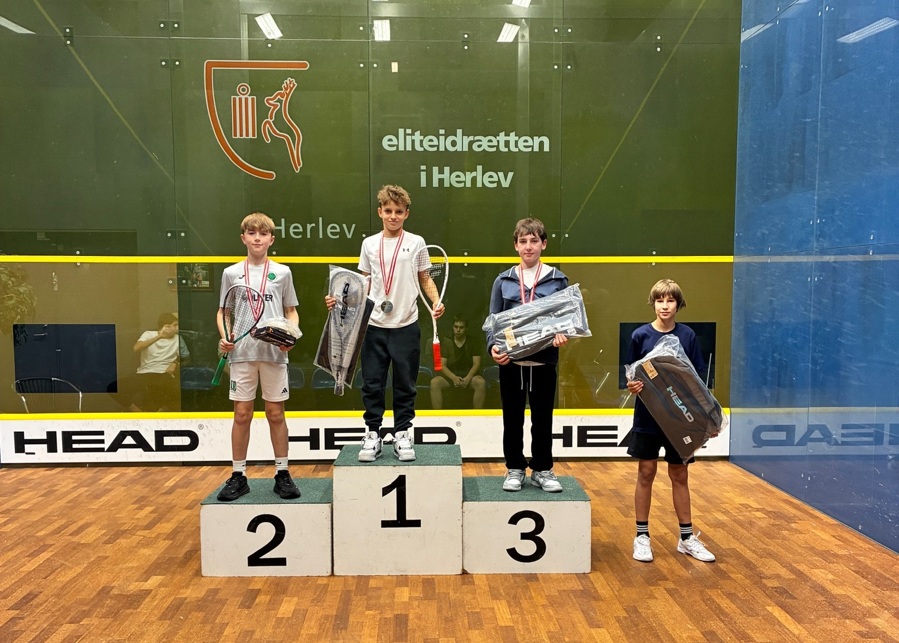
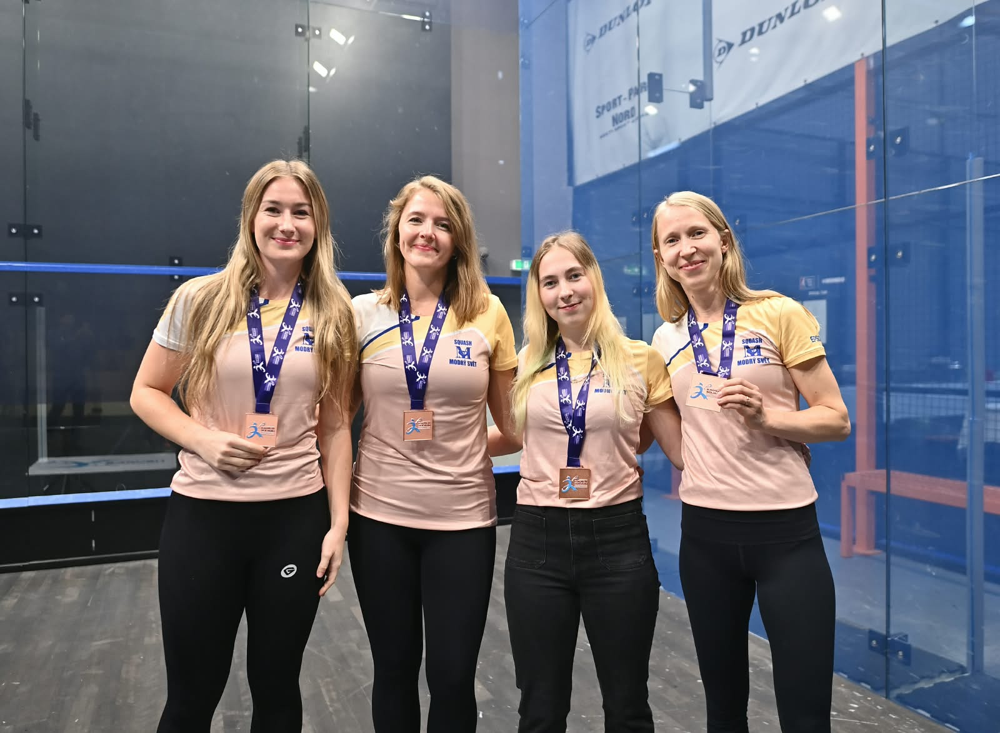
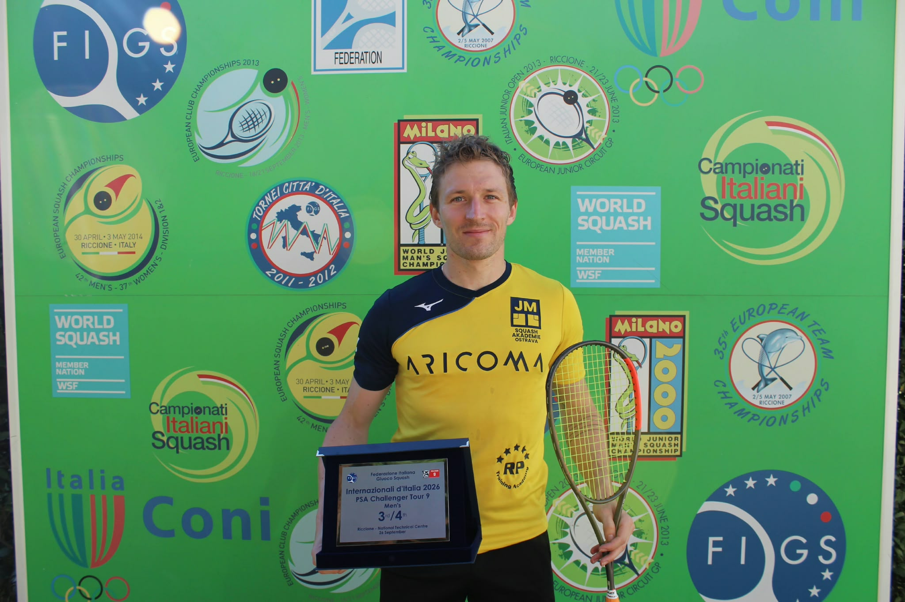
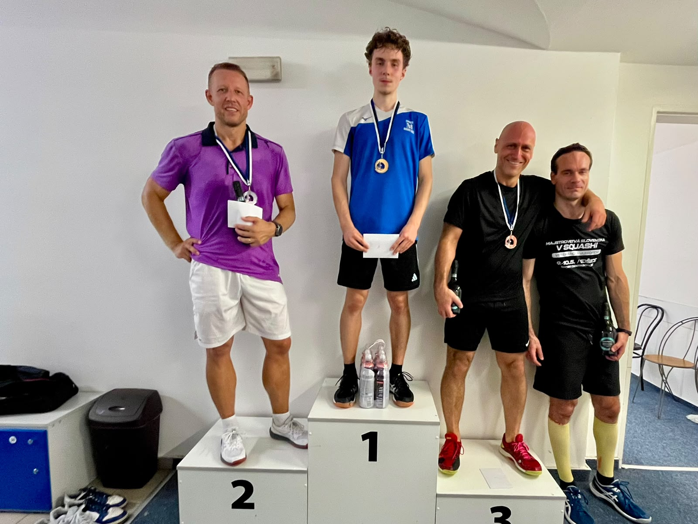
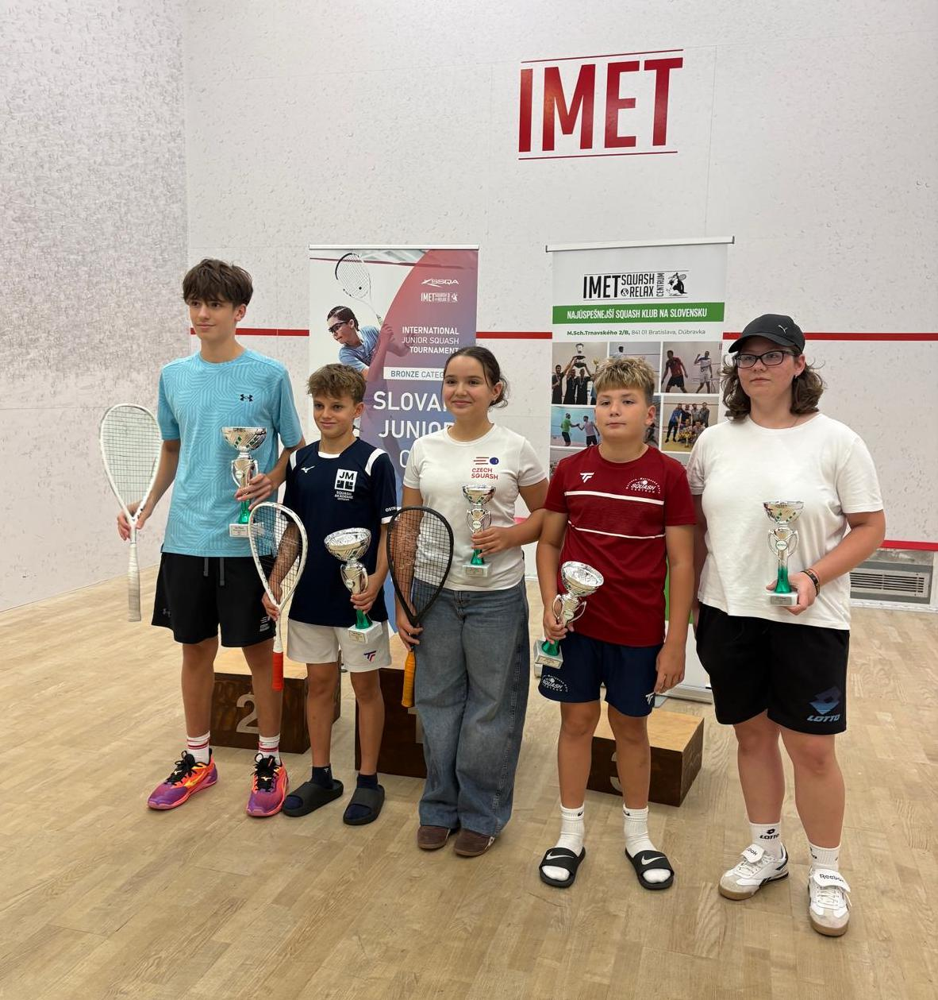
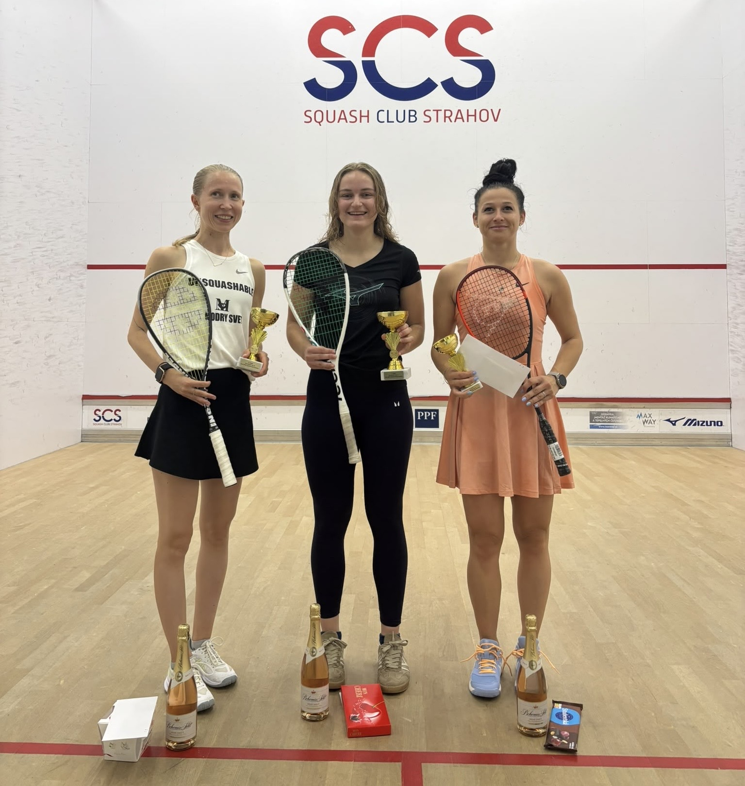
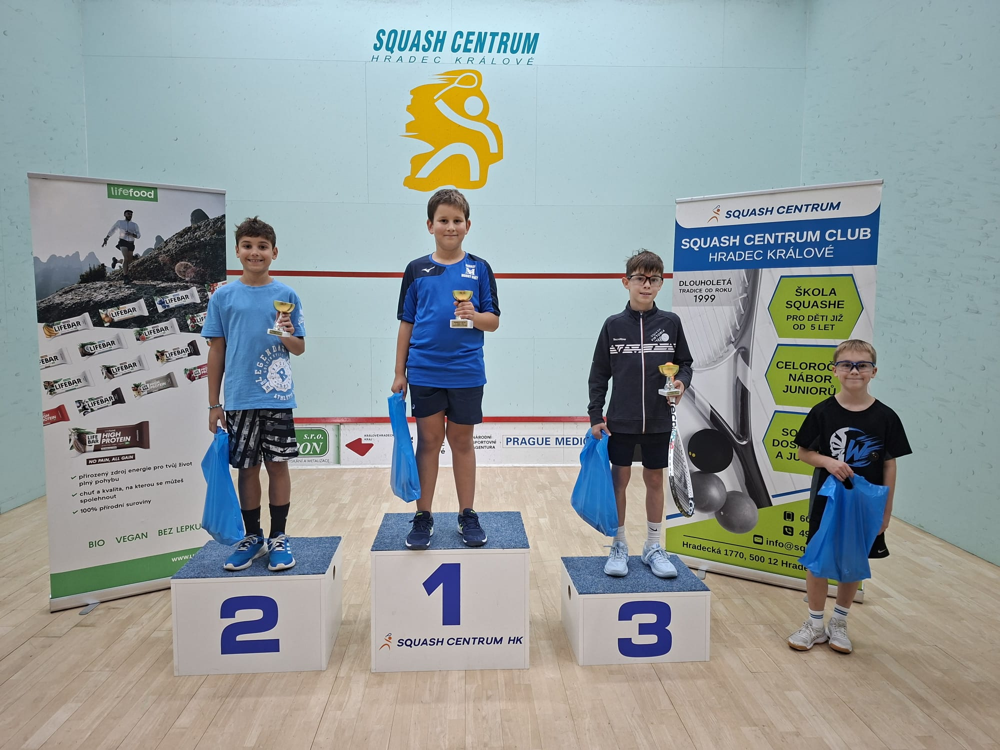
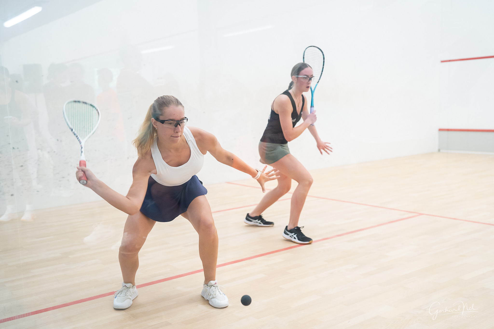
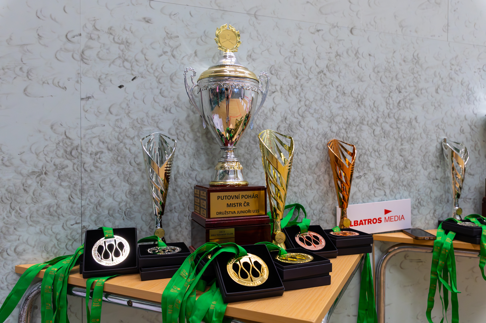
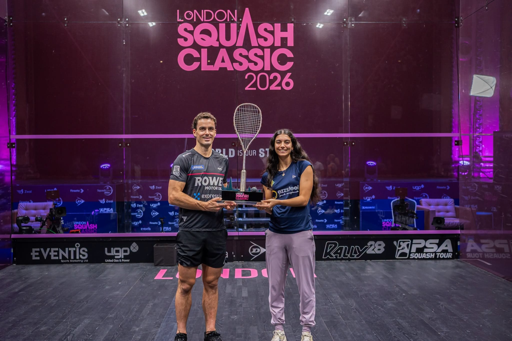

Turnaje a soutěže · 05. 10. 2026
Hradecký juniorský CUP
Hradec Králové hostil 3.–4. října 131 juniorů. Na turnaji kategorie A se hrálo v deseti kategoriích od U11 do U19.
Ze světa českého squashe
Zprávy z turnajů, reprezentace i dění v asociaci.
Zobrazeno: 29 z 29
Turnaje a soutěže · 05. 10. 2026
Hradec Králové hostil 3.–4. října 131 juniorů. Na turnaji kategorie A se hrálo v deseti kategoriích od U11 do U19.

Turnaje a soutěže · 30. 09. 2026
Tamara Holzbauerová startovala na CB Squash Tour v São Paulu. V prvním kole podlehla Australance Madison Lyon 0:3.

Reprezentace · 27. 09. 2026
Vítek Vizibla vyhrál kategorii BU13 na Danish Junior Open. Česká výprava měla šestnáct hráčů; Adéla Branická obsadila páté místo v GU13.

Reprezentace · 26. 09. 2026
Ženský tým SC Modrý svět získal bronz na mistrovství Evropy klubů v Norimberku. Jde o první českou medaili z tohoto šampionátu.

Turnaje a soutěže · 25. 09. 2026
Jakub Solnický postoupil do semifinále Internazionali d’Italia. Na cestě mezi nejlepší čtyři porazil v pěti setech Rowana Damminga.

Turnaje a soutěže · 25. 09. 2026
Viktor Byrtus došel do čtvrtfinále turnaje Open de Quebec – Espace Y. V prvním kole měl jako třetí nasazený volný los.

Turnaje a soutěže · 23. 09. 2026
Mužský turnaj kategorie C na pražské Ohradní vyhrál Jan Líkař. Do soutěže se přihlásilo šestnáct hráčů.

Reprezentace · 22. 09. 2026
Šestnáct českých juniorů přivezlo ze Slovak Junior Open pět medailí. Jan Jašek zvítězil v BU15 a Vítek Vizibla v BU13.

Turnaje a soutěže · 21. 09. 2026
První turnaje nejvyšší domácí kategorie na Strahově vyhráli Karolína Šrámková a Marek Panáček. Startovalo 32 mužů a 11 žen.

Turnaje a soutěže · 20. 09. 2026
Juniorského turnaje kategorie B v ostravském centru FAJNE se zúčastnilo přibližně šedesát mladých hráčů.

Turnaje a soutěže · 17. 09. 2026
Viktor Byrtus skončil na kanadském turnaji Nash Cup ve druhém kole. V úvodu porazil Connora Rawlinse 3:1.
Turnaje a soutěže · 15. 09. 2026
Zářijový přehled ČASQ upozornil na klubové turnaje kategorie D v Praze, Hradci Králové a Brně.

Turnaje a soutěže · 13. 09. 2026
Velká cena Prahy otevřela juniorskou sezonu turnajem kategorie A. O devět titulů se utkalo 108 juniorů.
ČASQ · 11. 09. 2026
ČASQ zveřejnila pozvánku na školení rozhodčích III. třídy v Bratislavě. Kurz byl naplánován na 25.–26. září 2026.

ČASQ · 10. 09. 2026
ČASQ zveřejnila rozlosování ligových soutěží pro sezonu 2026/27. Mužská extraliga zahrnovala osm tříčlenných týmů.
ČASQ · 08. 09. 2026
Zápis z jednání výkonného výboru č. 7/2026 byl zveřejněn 8. září. Zachycuje jednání z předchozího dne.

Turnaje a soutěže · 07. 09. 2026
London Squash Classic 2026 vyhráli Amina Orfi a Paul Coll. Coll v Londýně získal třetí titul v řadě.

Reprezentace · 05. 09. 2026
Zpráva z 5. září shrnula podzimní starty českých hráčů na třech kontinentech. Zahrnovala také klubové mistrovství Evropy v Norimberku.

Turnaje a soutěže · 02. 09. 2026
Začátkem září ČASQ představila klubové série turnajů kategorie D. Přehled zahrnoval Ohradní, Squash Arenu a brněnskou Viktorii.
Turnaje a soutěže · 24. 08. 2026
Marek Panáček skončil na PSA Budapest Squash Open v prvním kole. Soupeřem mu byl Portugalec Rui Soares.

Reprezentace · 22. 08. 2026
Jakub Solnický a Marek Panáček skončili na mistrovství Evropy jednotlivců v Budapešti v první desítce. Karolína Šrámková obsadila třinácté místo.
ČASQ · 14. 08. 2026
ČASQ zveřejnila zápis z jednání výkonného výboru č. 6/2026. Dokument byl publikován 14. srpna 2026.
Turnaje a soutěže · 13. 08. 2026
Karolína Šrámková postoupila na turnaji v Indii do semifinále. Ve čtvrtfinále porazila Rathiku Suthanthira Seelan bez ztráty setu.
Turnaje a soutěže · 13. 08. 2026
Marek Panáček došel na turnaji ve Valencii do čtvrtfinále. Ve druhém kole porazil Patricka Rooneyho, tehdy 41. hráče světa.
ČASQ · 27. 07. 2026
Nadace ČEZ pomohla uhradit podporu trenérů mládeže v projektu LSCM během sezony 2025/2026.

Reprezentace · 26. 07. 2026
Anahat Singh a Mohamad Zakaria vyhráli juniorské mistrovství světa 2026 v Kanadě. Zakaria získal třetí titul v řadě.
ČASQ · 06. 07. 2026
Podpora trenérů mládeže LSCM pokračovala pro sezonu 2026/2027. Zpráva z července uvádí podmínky a tehdejší termín přihlášek.
Reprezentace · 05. 07. 2026
Jan Jašek obsadil na Dutch Junior Open čtvrté místo. V utkání o bronz podlehl Vedanu Agrawalovi.
Turnaje a soutěže · 27. 06. 2026
Marek Panáček postoupil do finále Madrid Open. Po 85 minutách podlehl Leandru Romigliovi 1:3.
Zkuste jiné slovo nebo zrušte vybrané filtry.